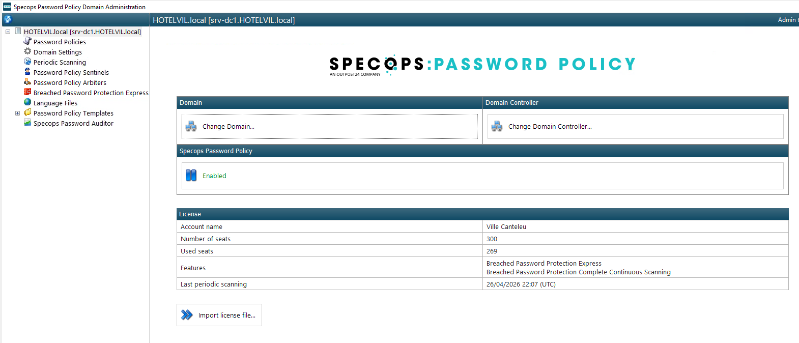
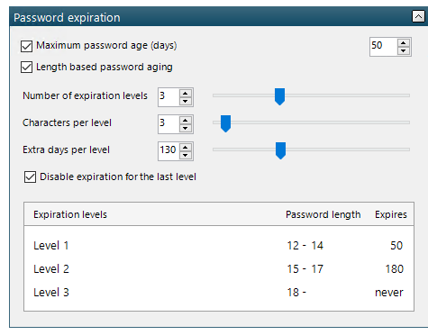
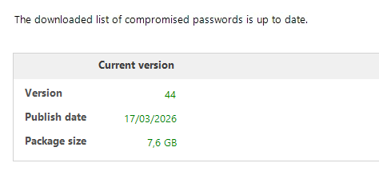

Projet technique de sécurisation sur environnement Active Directory avec Specops.

Nouvelle politique de mots de passe avec Specops
Projet de durcissement de la sécurité des comptes utilisateurs avec Specops Password Policy dans un environnement Active Directory.
Contexte
Ce projet répondait à un besoin simple mais essentiel : limiter les risques de compromission des comptes en imposant des mots de passe plus robustes et en s'appuyant sur Specops Password Policy pour aller plus loin que la politique native d'Active Directory. Il s'inscrit dans une logique de prevention, de conformite et de sécurisation du système d'information.
1 semaine de préparation avant le lancement de la nouvelle politique.
Licence a 3 621,63 EUR pour la mise en place de la solution.
21 mai 2025
28 mai 2025, date de lancement de la politique de mots de passe.
Travail réalisé
- Configuration d'une politique de mots de passe dans Specops Password Policy.
- Definition d'exigences de longueur, de complexite et de contraintes de composition.
- Mise en place d'un historique pour eviter la reutilisation immediate des anciens mots de passe.
- Blocage des mots de passe faibles ou compromis pour renforcer la protection des comptes.
- Application de la strategie via GPO avec ciblage adapte a l'environnement.
- Verification du comportement utilisateur et validation du bon fonctionnement de la politique.
Deroulement du lancement
- Préparation de la solution Specops sur le domaine Active Directory et vérification des prérequis de l'environnement.
- Semaine de préparation du 21 mai 2025 au 28 mai 2025 avant la mise en production de la nouvelle politique.
- Analyse initiale de la situation pour identifier les mots de passe faibles, les besoins de durcissement et les populations concernees.
- Definition d'une politique cible avec des regles de longueur, de complexite, d'expiration et de blocage des mots de passe compromis.
- Lancement de la nouvelle politique le 28 mai 2025 avec un deploiement maitrise pour limiter l'impact sur le support.
- Communication auprès des utilisateurs afin d'expliquer les nouvelles règles et le fonctionnement du changement de mot de passe.
- Suivi post-déploiement avec vérification des scans périodiques, des retours utilisateurs et des comptes a risque.
Difficultés et points d'attention
- Trouver un équilibre entre sécurité renforcee et usage quotidien pour les utilisateurs.
- Eviter des regles trop strictes qui genereraient davantage de demandes de support.
- Vérifier que la politique Specops et son ciblage via GPO s'appliquent bien aux bons utilisateurs.
- Planifier un deploiement progressif pour ne pas saturer l'equipe support au moment du changement.
Captures Specops



Competences BTS SIO SISR mobilisees
- Participer a la sécurisation d'un service informatique et de ses accès.
- Appliquer une politique technique en lien avec les besoins de l'organisation.
- Verifier, documenter et justifier une mesure de protection.